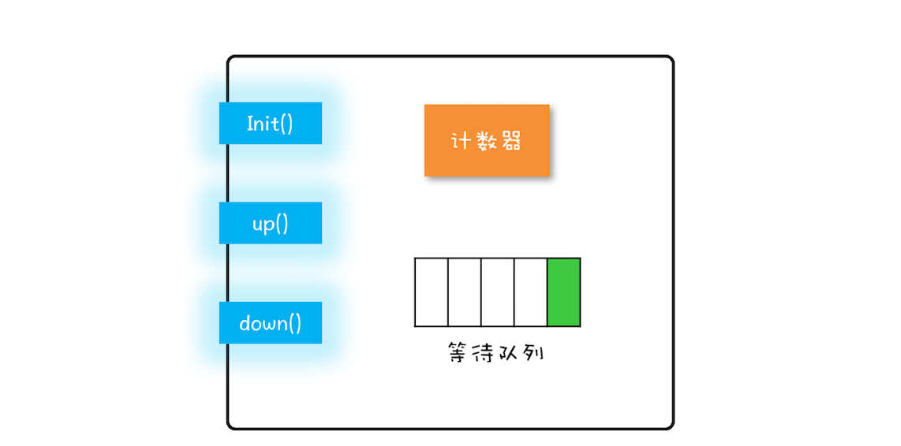

- 00 学习攻略 如何才能学好并发编程？.md
- 00 开篇词 你为什么需要学习并发编程？.md
- 01 可见性、原子性和有序性问题：并发编程Bug的源头.md
- 02 Java内存模型：看Java如何解决可见性和有序性问题.md
- 03 互斥锁（上）：解决原子性问题.md
- 04 互斥锁（下）：如何用一把锁保护多个资源？.md
- 05 一不小心就死锁了，怎么办？.md
- 06 用“等待-通知”机制优化循环等待.md
- 07 安全性、活跃性以及性能问题.md
- 08 管程：并发编程的万能钥匙.md
- 09 Java线程（上）：Java线程的生命周期.md
- 10 Java线程（中）：创建多少线程才是合适的？.md
- 11 Java线程（下）：为什么局部变量是线程安全的？.md
- 12 如何用面向对象思想写好并发程序？.md
- 13 理论基础模块热点问题答疑.md
- 14 Lock和Condition（上）：隐藏在并发包中的管程.md
- 15 Lock和Condition（下）：Dubbo如何用管程实现异步转同步？.md
- 16 Semaphore：如何快速实现一个限流器？.md
- 17 ReadWriteLock：如何快速实现一个完备的缓存？.md
- 18 StampedLock：有没有比读写锁更快的锁？.md
- 19 CountDownLatch和CyclicBarrier：如何让多线程步调一致？.md
- 20 并发容器：都有哪些“坑”需要我们填？.md
- 21 原子类：无锁工具类的典范.md
- 22 Executor与线程池：如何创建正确的线程池？.md
- 23 Future：如何用多线程实现最优的“烧水泡茶”程序？.md
- 24 CompletableFuture：异步编程没那么难.md
- 25 CompletionService：如何批量执行异步任务？.md
- 26 Fork_Join：单机版的MapReduce.md
- 27 并发工具类模块热点问题答疑.md
- 28 Immutability模式：如何利用不变性解决并发问题？.md
- 29 Copy-on-Write模式：不是延时策略的COW.md
- 3 个用户来信 打开一个新的并发世界.md
- 30 线程本地存储模式：没有共享，就没有伤害.md
- 31 Guarded Suspension模式：等待唤醒机制的规范实现.md
- 32 Balking模式：再谈线程安全的单例模式.md
- 33 Thread-Per-Message模式：最简单实用的分工方法.md
- 34 Worker Thread模式：如何避免重复创建线程？.md
- 35 两阶段终止模式：如何优雅地终止线程？.md
- 36 生产者-消费者模式：用流水线思想提高效率.md
- 37 设计模式模块热点问题答疑.md
- 38 案例分析（一）：高性能限流器Guava RateLimiter.md
- 39 案例分析（二）：高性能网络应用框架Netty.md
- 40 案例分析（三）：高性能队列Disruptor.md
- 41 案例分析（四）：高性能数据库连接池HiKariCP.md
- 42 Actor模型：面向对象原生的并发模型.md
- 43 软件事务内存：借鉴数据库的并发经验.md
- 44 协程：更轻量级的线程.md
- 45 CSP模型：Golang的主力队员.md
- 用户来信 真好，面试考到这些并发编程，我都答对了！.md
- 结束语 十年之后，初心依旧.md
16 Semaphore：如何快速实现一个限流器？
Semaphore，现在普遍翻译为“信号量”，以前也曾被翻译成“信号灯”，因为类似现实生活里的红绿灯，车辆能不能通行，要看是不是绿灯。同样，在编程世界里，线程能不能执行，也要看信号量是不是允许。
信号量是由大名鼎鼎的计算机科学家迪杰斯特拉（Dijkstra）于1965年提出，在这之后的15年，信号量一直都是并发编程领域的终结者，直到1980年管程被提出来，我们才有了第二选择。目前几乎所有支持并发编程的语言都支持信号量机制，所以学好信号量还是很有必要的。
下面我们首先介绍信号量模型，之后介绍如何使用信号量，最后我们再用信号量来实现一个限流器。
信号量模型
信号量模型还是很简单的，可以简单概括为：一个计数器，一个等待队列，三个方法。在信号量模型里，计数器和等待队列对外是透明的，所以只能通过信号量模型提供的三个方法来访问它们，这三个方法分别是：init()、down()和up()。你可以结合下图来形象化地理解。

信号量模型图
这三个方法详细的语义具体如下所示。
- init()：设置计数器的初始值。
- down()：计数器的值减1；如果此时计数器的值小于0，则当前线程将被阻塞，否则当前线程可以继续执行。
- up()：计数器的值加1；如果此时计数器的值小于或者等于0，则唤醒等待队列中的一个线程，并将其从等待队列中移除。
这里提到的init()、down()和up()三个方法都是原子性的，并且这个原子性是由信号量模型的实现方保证的。在Java SDK里面，信号量模型是由java.util.concurrent.Semaphore实现的，Semaphore这个类能够保证这三个方法都是原子操作。
如果你觉得上面的描述有点绕的话，可以参考下面这个代码化的信号量模型。
class Semaphore{
// 计数器
int count;
// 等待队列
Queue queue;
// 初始化操作
Semaphore(int c){
this.count=c;
}
//
void down(){
this.count--;
if(this.count<0){
//将当前线程插入等待队列
//阻塞当前线程
}
}
void up(){
this.count++;
if(this.count<=0) {
//移除等待队列中的某个线程T
//唤醒线程T
}
}
}
这里再插一句，信号量模型里面，down()、up()这两个操作历史上最早称为P操作和V操作，所以信号量模型也被称为PV原语。另外，还有些人喜欢用semWait()和semSignal()来称呼它们，虽然叫法不同，但是语义都是相同的。在Java SDK并发包里，down()和up()对应的则是acquire()和release()。
如何使用信号量
通过上文，你应该会发现信号量的模型还是很简单的，那具体该如何使用呢？其实你想想红绿灯就可以了。十字路口的红绿灯可以控制交通，得益于它的一个关键规则：车辆在通过路口前必须先检查是否是绿灯，只有绿灯才能通行。这个规则和我们前面提到的锁规则是不是很类似？
其实，信号量的使用也是类似的。这里我们还是用累加器的例子来说明信号量的使用吧。在累加器的例子里面，count+=1操作是个临界区，只允许一个线程执行，也就是说要保证互斥。那这种情况用信号量怎么控制呢？
其实很简单，就像我们用互斥锁一样，只需要在进入临界区之前执行一下down()操作，退出临界区之前执行一下up()操作就可以了。下面是Java代码的示例，acquire()就是信号量里的down()操作，release()就是信号量里的up()操作。
static int count;
//初始化信号量
static final Semaphore s
= new Semaphore(1);
//用信号量保证互斥
static void addOne() {
s.acquire();
try {
count+=1;
} finally {
s.release();
}
}
下面我们再来分析一下，信号量是如何保证互斥的。假设两个线程T1和T2同时访问addOne()方法，当它们同时调用acquire()的时候，由于acquire()是一个原子操作，所以只能有一个线程（假设T1）把信号量里的计数器减为0，另外一个线程（T2）则是将计数器减为-1。对于线程T1，信号量里面的计数器的值是0，大于等于0，所以线程T1会继续执行；对于线程T2，信号量里面的计数器的值是-1，小于0，按照信号量模型里对down()操作的描述，线程T2将被阻塞。所以此时只有线程T1会进入临界区执行count+=1；。
当线程T1执行release()操作，也就是up()操作的时候，信号量里计数器的值是-1，加1之后的值是0，小于等于0，按照信号量模型里对up()操作的描述，此时等待队列中的T2将会被唤醒。于是T2在T1执行完临界区代码之后才获得了进入临界区执行的机会，从而保证了互斥性。
快速实现一个限流器
上面的例子，我们用信号量实现了一个最简单的互斥锁功能。估计你会觉得奇怪，既然有Java SDK里面提供了Lock，为啥还要提供一个Semaphore ？其实实现一个互斥锁，仅仅是 Semaphore的部分功能，Semaphore还有一个功能是Lock不容易实现的，那就是：Semaphore可以允许多个线程访问一个临界区。
现实中还有这种需求？有的。比较常见的需求就是我们工作中遇到的各种池化资源，例如连接池、对象池、线程池等等。其中，你可能最熟悉数据库连接池，在同一时刻，一定是允许多个线程同时使用连接池的，当然，每个连接在被释放前，是不允许其他线程使用的。
其实前不久，我在工作中也遇到了一个对象池的需求。所谓对象池呢，指的是一次性创建出N个对象，之后所有的线程重复利用这N个对象，当然对象在被释放前，也是不允许其他线程使用的。对象池，可以用List保存实例对象，这个很简单。但关键是限流器的设计，这里的限流，指的是不允许多于N个线程同时进入临界区。那如何快速实现一个这样的限流器呢？这种场景，我立刻就想到了信号量的解决方案。
信号量的计数器，在上面的例子中，我们设置成了1，这个1表示只允许一个线程进入临界区，但如果我们把计数器的值设置成对象池里对象的个数N，就能完美解决对象池的限流问题了。下面就是对象池的示例代码。
class ObjPool<T, R> {
final List<T> pool;
// 用信号量实现限流器
final Semaphore sem;
// 构造函数
ObjPool(int size, T t){
pool = new Vector<T>(){};
for(int i=0; i<size; i++){
pool.add(t);
}
sem = new Semaphore(size);
}
// 利用对象池的对象，调用func
R exec(Function<T,R> func) {
T t = null;
sem.acquire();
try {
t = pool.remove(0);
return func.apply(t);
} finally {
pool.add(t);
sem.release();
}
}
}
// 创建对象池
ObjPool<Long, String> pool =
new ObjPool<Long, String>(10, 2);
// 通过对象池获取t，之后执行
pool.exec(t -> {
System.out.println(t);
return t.toString();
});
我们用一个List来保存对象实例，用Semaphore实现限流器。关键的代码是ObjPool里面的exec()方法，这个方法里面实现了限流的功能。在这个方法里面，我们首先调用acquire()方法（与之匹配的是在finally里面调用release()方法），假设对象池的大小是10，信号量的计数器初始化为10，那么前10个线程调用acquire()方法，都能继续执行，相当于通过了信号灯，而其他线程则会阻塞在acquire()方法上。对于通过信号灯的线程，我们为每个线程分配了一个对象 t（这个分配工作是通过pool.remove(0)实现的），分配完之后会执行一个回调函数func，而函数的参数正是前面分配的对象 t ；执行完回调函数之后，它们就会释放对象（这个释放工作是通过pool.add(t)实现的），同时调用release()方法来更新信号量的计数器。如果此时信号量里计数器的值小于等于0，那么说明有线程在等待，此时会自动唤醒等待的线程。
简言之，使用信号量，我们可以轻松地实现一个限流器，使用起来还是非常简单的。
总结
信号量在Java语言里面名气并不算大，但是在其他语言里却是很有知名度的。Java在并发编程领域走的很快，重点支持的还是管程模型。 管程模型理论上解决了信号量模型的一些不足，主要体现在易用性和工程化方面，例如用信号量解决我们曾经提到过的阻塞队列问题，就比管程模型麻烦很多，你如果感兴趣，可以课下了解和尝试一下。
课后思考
在上面对象池的例子中，对象保存在了Vector中，Vector是Java提供的线程安全的容器，如果我们把Vector换成ArrayList，是否可以呢？
欢迎在留言区与我分享你的想法，也欢迎你在留言区记录你的思考过程。感谢阅读，如果你觉得这篇文章对你有帮助的话，也欢迎把它分享给更多的朋友。
© 2019 - 2023 Liangliang Lee. Powered by gin and hexo-theme-book.